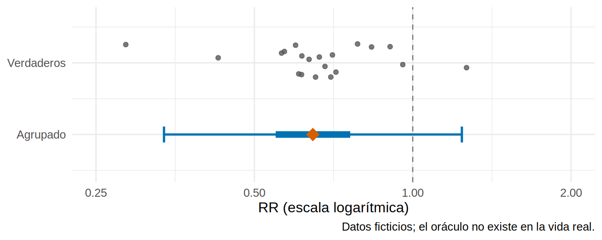
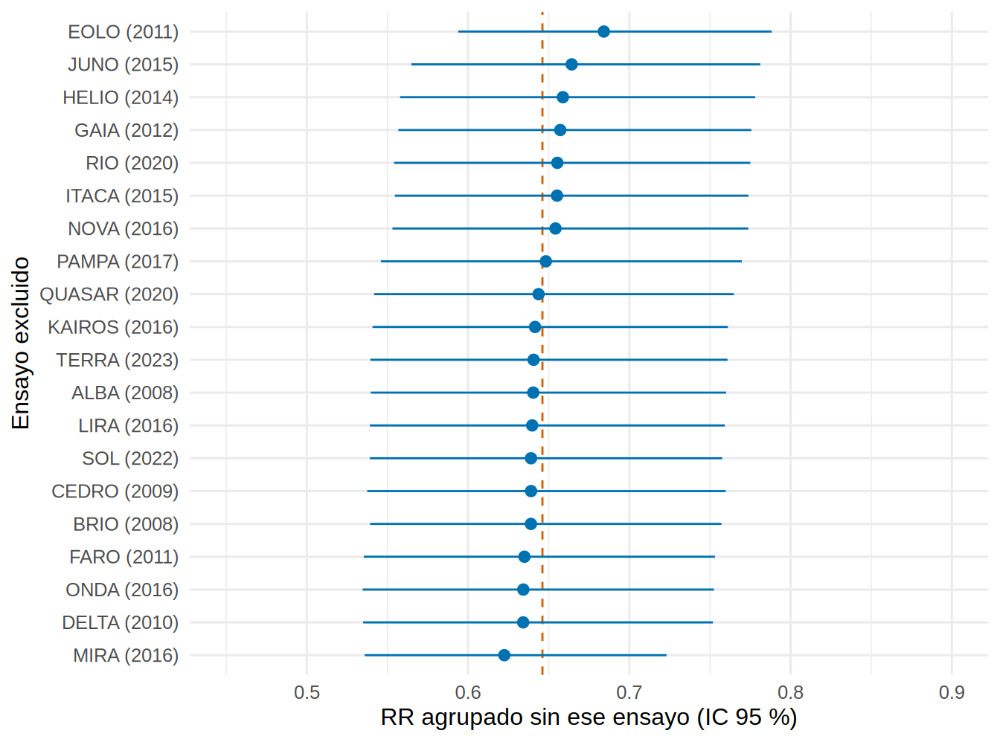
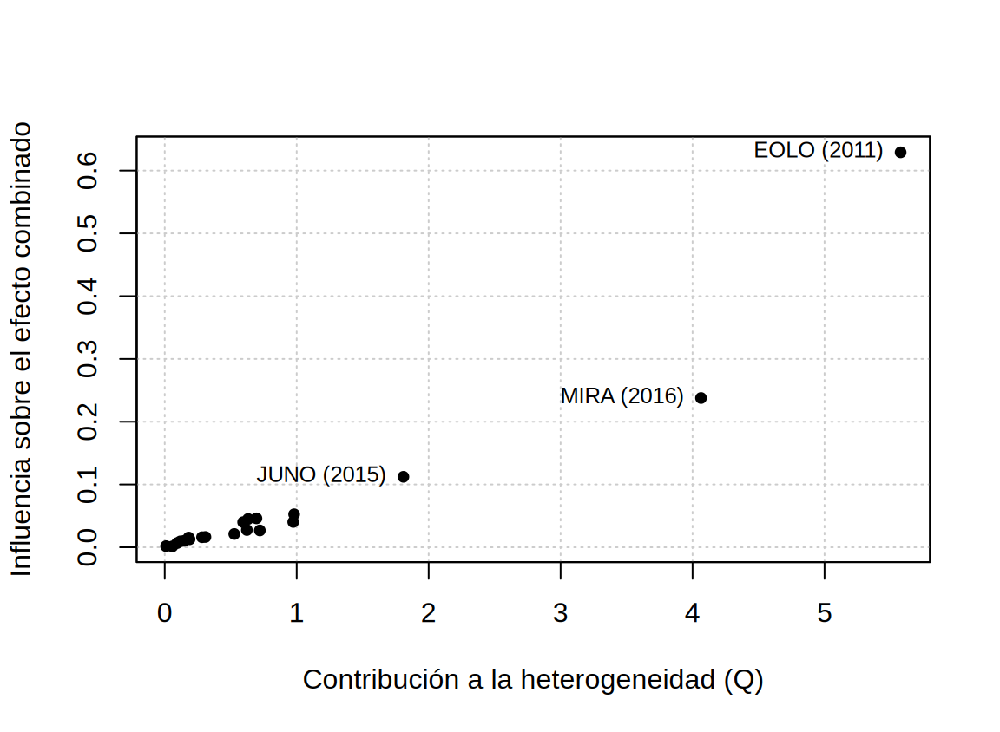

library(tidyverse)
library(metafor)
source("R/funciones_extra_a.R") # num(), pct()
theme_set(theme_minimal(base_size = 12))
# 20 ensayos FICTICIOS (iSGLT2 vs placebo en ERC) y su oráculo (log RR verdadero de cada ensayo)
ensayos <- read_csv("Bases/metaanalisis_isglt2.csv", show_col_types = FALSE)
oraculo <- read_csv("Bases/metaanalisis_isglt2_oraculo.csv", show_col_types = FALSE)
m <- rma(yi = log_rr, sei = se_log_rr, data = ensayos, slab = estudio, method = "REML") # el modelo de 21.4
k <- m$kHeterogeneidad: cuánto varían los efectos entre ensayos
Nota🩺 Escenario
El metaanálisis de iSGLT2 (ficticio, 21.4) dio un RR agrupado de 0.65. Una colega de otro hospital pregunta: «Vale, pero ¿qué me va a pasar a mí?: ¿si hiciera un ensayo nuevo en mi población, vería 0.65?». La respuesta honesta es «no necesariamente»: los ensayos van desde un RR de 0.27 hasta uno de 1.28. Hay que cuantificar cuánto varían los efectos entre ensayos (heterogeneidad) y decir, además del promedio, qué rango de efectos es plausible en un contexto nuevo.
Lo que vamos a hacer
- Calcular Q, I² y τ² (a mano y con
metafor), con sus intervalos de confianza. - Obtener el intervalo de predicción: ¿qué efecto verás en el próximo ensayo?
- Hacer un análisis de influencia (leave-one-out,
influence(), gráfico de Baujat) y entender por qué I² no mide cuánta heterogeneidad clínica hay.
Paso 1: Q, I² y τ²
Tres números describen la heterogeneidad, y cada uno responde algo distinto:
- Q de Cochran: una prueba: ¿se alejan los ensayos del promedio más de lo que permite el azar? Es la suma de las distancias al promedio, ponderadas por precisión. Si no hubiera heterogeneidad, Q sería parecida a sus grados de libertad (k − 1).
- τ² (tau al cuadrado): la varianza real entre ensayos, en la escala del modelo (aquí, log RR). Su raíz, τ, es la desviación típica de los efectos verdaderos. Es la medida «absoluta».
- I²: el porcentaje de la variabilidad total que se debe a diferencias reales entre ensayos y no al azar de muestreo: \(I^2 = (Q - (k-1))/Q\) (Higgins y Thompson, 2002). Es una medida «relativa».
w <- 1 / ensayos$se_log_rr^2
mu_fe <- sum(w * ensayos$log_rr) / sum(w)
Q <- sum(w * (ensayos$log_rr - mu_fe)^2) # Q de Cochran a mano
gl <- k - 1
c(Q = Q, gl = gl, p = pchisq(Q, gl, lower.tail = FALSE), I2_desde_Q = max(0, (Q - gl) / Q), H2 = Q / gl) Q gl p I2_desde_Q H2
9.161843e+01 1.900000e+01 1.711778e-11 7.926181e-01 4.822022e+00 # metafor: el modelo REML da tau2, I2 y H2, y confint() les pone intervalo de confianza
c(Q = m$QE, tau2 = m$tau2, tau = sqrt(m$tau2), I2 = m$I2 / 100, H2 = m$H2) Q tau2 tau I2 H2
91.6184250 0.1036815 0.3219962 0.8123302 5.3285077 confint(m)
estimate ci.lb ci.ub
tau^2 0.1037 0.0453 0.2520
tau 0.3220 0.2129 0.5020
I^2(%) 81.2330 65.4202 91.3207
H^2 5.3285 2.8919 11.5216 Qué vemos.
- Q = 91.6 con 19 grados de libertad: unas 4.8 veces lo esperado sin heterogeneidad (p < 0.001).
- I² = 79 % calculado desde Q y 81 % con el τ² de REML: se calculan de formas distintas y por eso difieren un poco. Es una heterogeneidad alta (el Handbook de Cochrane da rangos orientativos y solapados; úsalos como guía, no como regla). Su IC es muy ancho: 65 % a 91 %.
- τ² = 0.104, es decir, τ = 0.32 en log RR. Se interpreta así: alrededor del 68 % de los efectos verdaderos estarían entre 0.47 y 0.89 en escala RR (el promedio ± 1 τ). Esa es una frase que un clínico entiende.
- Con solo 20 ensayos, τ² es muy impreciso (IC 0.05 a 0.25).
¿Y la verdad? El simulador pone τ = 0.25 de heterogeneidad residual y además hace que el efecto dependa de la albuminuria de cada ensayo. La desviación típica de los efectos verdaderos de estos 20 ensayos (el oráculo) es 0.30: el estimado (0.32) está muy cerca. El metaanálisis recupera bien la heterogeneidad real, y esta incluye lo que explicaría la albuminuria (21.6).
Paso 2: el intervalo de predicción
El intervalo de confianza del efecto combinado (0.55 a 0.76) responde «¿dónde está el efecto medio?». Pero tu colega pregunta otra cosa: el efecto de un ensayo nuevo. Para eso se usa el intervalo de predicción (IP), que suma a la incertidumbre del promedio la variación entre ensayos (τ²):
\[ \hat\theta \;\pm\; z_{0.975}\sqrt{\hat\tau^2 + EE(\hat\theta)^2} \]
mu <- coef(m); se_mu <- m$se
ip_mano <- mu + c(-1, 1) * qnorm(0.975) * sqrt(m$tau2 + se_mu^2) # a mano (aproximación normal)
exp(ip_mano)[1] 0.3366746 1.2399155predict(m, transf = exp) # metafor: IC (ci.) e IP (pi.)
pred ci.lb ci.ub pi.lb pi.ub
0.6461 0.5489 0.7606 0.3367 1.2399 m_hk <- rma(yi = log_rr, sei = se_log_rr, data = ensayos, method = "REML", test = "knha")
predict(m_hk, transf = exp) # con HKSJ el IP usa la t y es algo más ancho
pred ci.lb ci.ub pi.lb pi.ub
0.6461 0.5439 0.7676 0.3223 1.2954 p_beneficio <- pnorm(0, mean = mu, sd = sqrt(m$tau2 + se_mu^2)) # P(efecto verdadero < 0 en un ensayo nuevo)Qué vemos. El IC es 0.55 a 0.76, pero el IP va de 0.34 a 1.24: incluye el 1. Un ensayo nuevo podría encontrar desde una reducción del 66 % hasta un aumento del 24 %. Bajo el modelo, la probabilidad de que el efecto verdadero en un nuevo contexto sea beneficioso (RR < 1) es del 91 %. A mano y con predict() salen los mismos límites; con HKSJ el IP es algo más ancho (0.32 a 1.30), porque tiene en cuenta que τ² es estimado.
Como tenemos el oráculo, comprobamos si el IP cumple su promesa: ¿cuántos de los 20 efectos verdaderos caen dentro?
dentro <- oraculo$theta_verdadero > ip_mano[1] & oraculo$theta_verdadero < ip_mano[2]
ggplot() +
geom_vline(xintercept = 1, linetype = "dashed", color = "grey50") +
geom_jitter(data = oraculo, aes(exp(theta_verdadero), 1.0), height = 0.12, width = 0, color = "grey35", alpha = 0.8) +
geom_errorbarh(aes(xmin = exp(ip_mano[1]), xmax = exp(ip_mano[2]), y = 0.55), height = 0.1, color = "#0072B2", linewidth = 0.9) +
geom_errorbarh(aes(xmin = exp(m$ci.lb), xmax = exp(m$ci.ub), y = 0.55), height = 0, color = "#0072B2", linewidth = 2.6) +
geom_point(aes(exp(mu), 0.55), shape = 18, size = 5, color = "#D55E00") +
scale_x_log10(breaks = c(0.25, 0.5, 1, 2), limits = c(0.25, 2)) +
scale_y_continuous(limits = c(0.3, 1.3), breaks = c(0.55, 1.0), labels = c("Agrupado", "Verdaderos")) +
labs(x = "RR (escala logarítmica)", y = NULL, caption = "Datos ficticios; el oráculo no existe en la vida real.")
De los 20 efectos verdaderos, 18 (90 %) caen dentro del IP, que promete cerca del 95 %; los demás son los extremos (RR 0.28 y 1.27). Y se ve la diferencia práctica: el IC (barra gruesa) es estrecho porque describe el promedio; los ensayos individuales se reparten por el IP, mucho más ancho. Si vas a informar una decisión para un contexto nuevo, el IP es la cifra que importa.
Paso 3: análisis de influencia
¿Depende el resultado de un solo ensayo? La forma más directa es el leave-one-out (dejar uno fuera): repetir el metaanálisis 20 veces, quitando cada vez un ensayo.
loo <- leave1out(m) |> as_tibble() |> mutate(estudio = ensayos$estudio, rr = exp(estimate), li = exp(ci.lb), ls = exp(ci.ub)) |>
select(estudio, rr, li, ls, tau2, I2)
loo |> arrange(rr) |> slice(c(1:2, (n() - 1):n())) |> mutate(across(where(is.numeric), \(x) round(x, 3)))# A tibble: 4 × 6
estudio rr li ls tau2 I2
<chr> <dbl> <dbl> <dbl> <dbl> <dbl>
1 MIRA (2016) 0.622 0.536 0.723 0.075 74.9
2 DELTA (2010) 0.634 0.535 0.752 0.107 81.0
3 JUNO (2015) 0.664 0.565 0.781 0.096 80.3
4 EOLO (2011) 0.684 0.594 0.788 0.066 73.6range(loo$rr)[1] 0.6224743 0.6841975loo |>
mutate(estudio = fct_reorder(estudio, rr)) |>
ggplot(aes(rr, estudio)) +
geom_vline(xintercept = exp(coef(m)), linetype = "dashed", color = "#D55E00") +
geom_pointrange(aes(xmin = li, xmax = ls), color = "#0072B2", size = 0.4) +
scale_x_continuous(limits = c(0.45, 0.9)) +
labs(x = "RR agrupado sin ese ensayo (IC 95 %)", y = "Ensayo excluido")
Qué vemos. El RR agrupado se mueve solo entre 0.62 y 0.68 al quitar cualquier ensayo (con todos: 0.65): el efecto medio es robusto. Pero la heterogeneidad sí depende de unos pocos: sin EOLO el I² cae a 74 % (de 81 %) y τ² a 0.066; sin MIRA, I² cae a 75 %. Veamos qué dice la distancia de Cook y el gráfico de Baujat:
res_inf <- influence(m)
inf_tab <- as.data.frame(res_inf$inf) |> mutate(estudio = ensayos$estudio, influyente = res_inf$is.infl)
inf_tab |> arrange(desc(cook.d)) |> select(estudio, rstudent, cook.d, hat, influyente) |> slice_head(n = 4) |>
mutate(across(where(is.numeric), \(x) round(x, 2))) estudio rstudent cook.d hat influyente
EOLO (2011) EOLO (2011) -2.87 0.47 0.05 TRUE
MIRA (2016) MIRA (2016) 2.37 0.20 0.06 FALSE
JUNO (2015) JUNO (2015) -1.42 0.11 0.05 FALSE
HELIO (2014) HELIO (2014) -1.02 0.05 0.05 FALSEb <- baujat(m, symbol = 19, xlab = "Contribución a la heterogeneidad (Q)", ylab = "Influencia sobre el efecto combinado")
top <- order(b$x, decreasing = TRUE)[1:3] # rotulamos los tres que más contribuyen
text(b$x[top], b$y[top], ensayos$estudio[top], pos = 2, cex = 0.8)
Qué vemos. influence() marca EOLO (2011) como influyente (residuo estudentizado -2.9, distancia de Cook 0.47). En el Baujat, los ensayos arriba a la derecha (EOLO y, algo menos, MIRA) son los que más aportan a la heterogeneidad y más mueven el resultado. ¿Qué hacer con ellos? No borrarlos. Primero hay que preguntarse por qué son distintos:
ensayos |> filter(estudio %in% c("EOLO (2011)", "MIRA (2016)")) |>
transmute(estudio, RR = round(exp(log_rr), 2), uacr_media, mediana_uacr_de_todos = median(ensayos$uacr_media), rob_global)# A tibble: 2 × 5
estudio RR uacr_media mediana_uacr_de_todos rob_global
<chr> <dbl> <dbl> <dbl> <chr>
1 EOLO (2011) 0.27 938 282. Algunas dudas
2 MIRA (2016) 1.28 120 282. Alto m_sin <- rma(yi = log_rr, sei = se_log_rr, data = filter(ensayos, !estudio %in% c("EOLO (2011)", "MIRA (2016)"))) # sin los dos extremosEOLO tiene la albuminuria media más alta de los 20 ensayos (938 mg/g) y el mayor efecto; MIRA, la más baja (120 mg/g), con riesgo de sesgo alto y un RR por encima de 1. Los dos extremos de la heterogeneidad coinciden con los dos extremos de albuminuria: una pista clínica que 21.6 explorará con una metarregresión. Sin ambos, el efecto agrupado sería 0.66 (I² = 58 %: la heterogeneidad baja, pero no desaparece); pero quitar ensayos «porque molestan» es una decisión que debería estar en el protocolo y justificarse clínicamente, no estadísticamente.
Paso 4: por qué I² no mide la heterogeneidad clínica
I² es un cociente: heterogeneidad real dividida por heterogeneidad real más ruido de muestreo. Si cambia el ruido, cambia I² aunque los efectos verdaderos varíen exactamente igual. Con la fórmula de Higgins y Thompson, \(I^2 = \tau^2/(\tau^2 + s^2)\), donde \(s^2\) es la varianza de muestreo «típica» de los ensayos. Fijamos el mismo τ² del modelo y variamos solo el tamaño de los ensayos:
s2 <- (k - 1) * sum(w) / (sum(w)^2 - sum(w^2)) # varianza de muestreo "típica" (Higgins y Thompson, 2002)
c(I2_metafor = m$I2 / 100, I2_con_la_formula = m$tau2 / (m$tau2 + s2)) # coinciden I2_metafor I2_con_la_formula
0.8123302 0.8123302 tibble(`tamaño de los ensayos` = c("la mitad", "los de la base", "el doble", "cuatro veces"),
`s² típica` = s2 * c(2, 1, 0.5, 0.25),
tau2 = m$tau2) |>
mutate(I2 = pct(tau2 / (tau2 + `s² típica`), 0), `s² típica` = round(`s² típica`, 3), tau2 = round(tau2, 3))# A tibble: 4 × 4
`tamaño de los ensayos` `s² típica` tau2 I2
<chr> <dbl> <dbl> <chr>
1 la mitad 0.048 0.104 68 %
2 los de la base 0.024 0.104 81 %
3 el doble 0.012 0.104 90 %
4 cuatro veces 0.006 0.104 95 % Qué vemos. Con exactamente el mismo τ² = 0.104 (los mismos efectos verdaderos dispersos), I² pasa de 68 % si los ensayos fueran la mitad de grandes a 95 % si fueran cuatro veces mayores. I² sube cuando los ensayos se hacen más precisos sin que la diversidad clínica haya cambiado nada. Y al revés: un metaanálisis de ensayos pequeñísimos puede tener un I² bajo con una diversidad clínica enorme, porque el ruido la tapa.
Por eso:
- I² no es «cuánta heterogeneidad clínica»: es cuánto de la variación observada no es azar de muestreo. La heterogeneidad clínica (poblaciones, dosis, seguimiento, definición del evento) se juzga con criterio médico leyendo los ensayos (PICOS, 21.1), no con un porcentaje.
- Para informar la dispersión usa τ (en las unidades del efecto) y el intervalo de predicción, no solo I².
- La prueba Q tiene poca potencia con pocos ensayos y detecta cualquier diferencia con muchos o con ensayos enormes: un p alto no demuestra homogeneidad.
- I² también depende de la medida (RR, OR, diferencia de medias): el mismo conjunto de ensayos puede dar I² distintos según cómo se exprese el efecto.
Tip💡 Con el paquete {meta} (código no verificado en el entorno de pruebas del libro)
En meta, el resumen de metagen() o metabin() con prediction = TRUE imprime τ², I² (con IC) y el intervalo de predicción; metainf() hace el leave-one-out y baujat() el gráfico de Baujat:
library(meta)
mg <- metagen(TE = log_rr, seTE = se_log_rr, studlab = estudio, data = ensayos, sm = "RR",
method.tau = "REML", method.random.ci = "HK", prediction = TRUE)
summary(mg) # tau2, tau, I2 con IC, Q y intervalo de predicción
metainf(mg, pooled = "random") # leave-one-out
baujat(mg)Trampas frecuentes
Advertencia⚠️ Errores clásicos con la heterogeneidad
- Interpretar I² como «cuánta heterogeneidad hay» o compararlo entre metaanálisis con ensayos de distinto tamaño (Paso 4).
- Decidir efecto fijo o aleatorio por el p de la Q, o dar por homogéneos los ensayos porque Q «no es significativa» con pocos ensayos.
- Informar solo el IC del efecto agrupado y callar el intervalo de predicción: con heterogeneidad alta, el IC da una falsa sensación de certeza para un contexto nuevo.
- Excluir ensayos «atípicos» para bajar el I² sin razón clínica previa: es pescar resultados.
- Usar el intervalo de predicción con muy pocos ensayos (por ejemplo, 3 o 4): es extremadamente impreciso.
Importante🎯 En resumen
- La heterogeneidad se resume con Q (prueba), τ²/τ (varianza real entre ensayos) e I² (proporción de la variabilidad que no es azar). Aquí: Q = 91.6, τ = 0.32, I² ≈ 81 %; el estimado de τ (0.32) está cerca de la dispersión verdadera de los ensayos (0.30).
- El intervalo de predicción responde «¿qué efecto veré en el próximo ensayo?»: aquí 0.34 a 1.24 (incluye el 1), frente a un IC de 0.55 a 0.76 para la media.
- El análisis de influencia (leave-one-out, Cook, Baujat) no cambia el efecto medio (RR entre 0.62 y 0.68), pero señala a EOLO y MIRA como los que más contribuyen a la heterogeneidad: investígalos, no los borres.
- I² depende del tamaño de los ensayos: no mide cuánta heterogeneidad clínica hay. Usa τ, el intervalo de predicción y tu criterio clínico.
Ejercicio
- Calcula con
rma(..., method = "DL")y conmethod = "PM"el τ² y el I². ¿Cuánto cambian respecto a REML? - Elimina los cinco ensayos más pequeños (menos de 1 000 pacientes) y repite Q, I² y el IP. ¿Qué pasa con I²? ¿Y con τ²? Relaciónalo con el Paso 4.
- Si tu hospital tiene pacientes con albuminuria baja (UACR < 150 mg/g), ¿te basta con el RR agrupado? ¿Qué parte del análisis de este subcapítulo te hace dudar?
Referencias
- Higgins JPT, Thompson SG. Quantifying heterogeneity in a meta-analysis. Stat Med. 2002;21:1539-1558.
- IntHout J, Ioannidis JPA, Rovers MM, Goeman JJ. Plea for routinely presenting prediction intervals in meta-analysis. BMJ Open. 2016;6:e010247.
- Viechtbauer W. Conducting meta-analyses in R with the metafor package. J Stat Softw. 2010;36(3):1-48.
- Higgins JPT y cols. (eds.). Cochrane Handbook for Systematic Reviews of Interventions, capítulo sobre heterogeneidad.